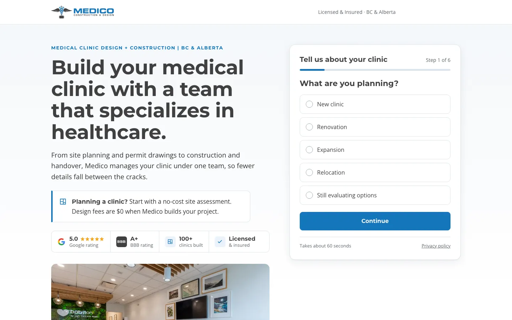
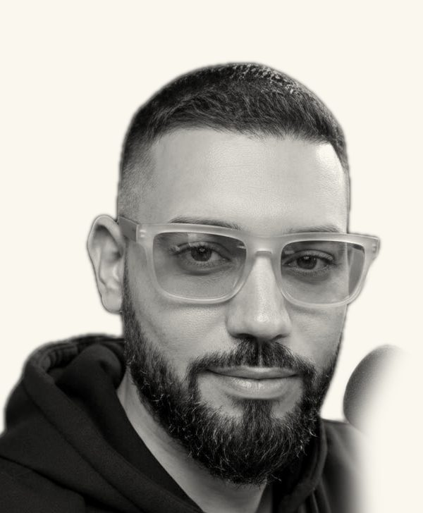
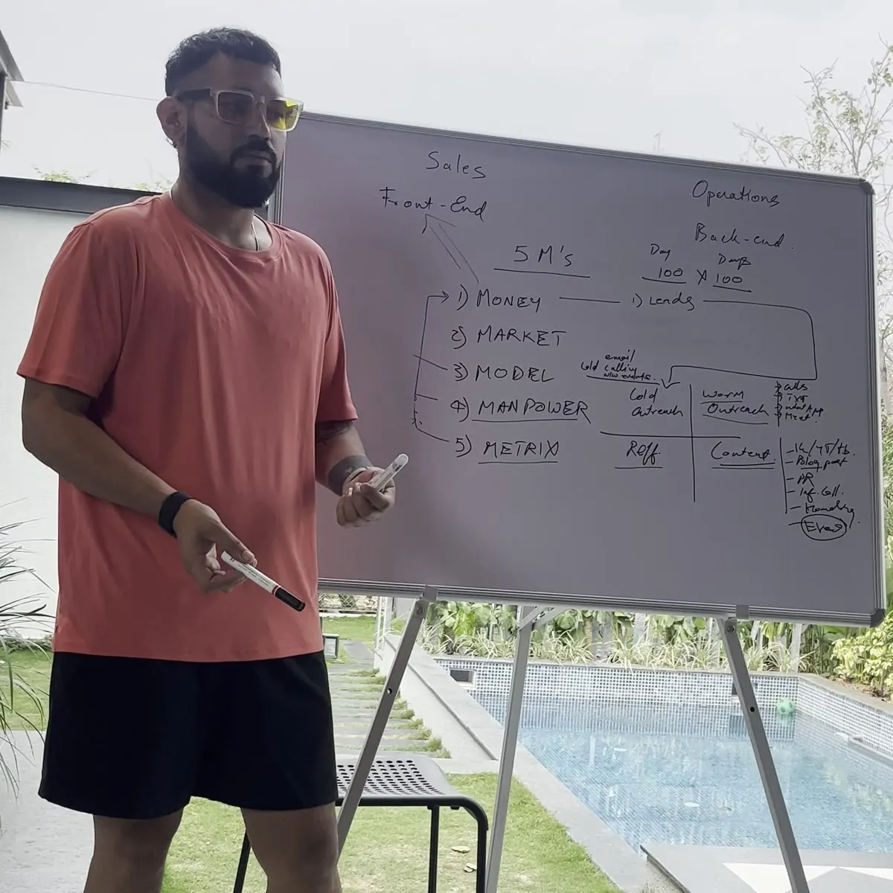
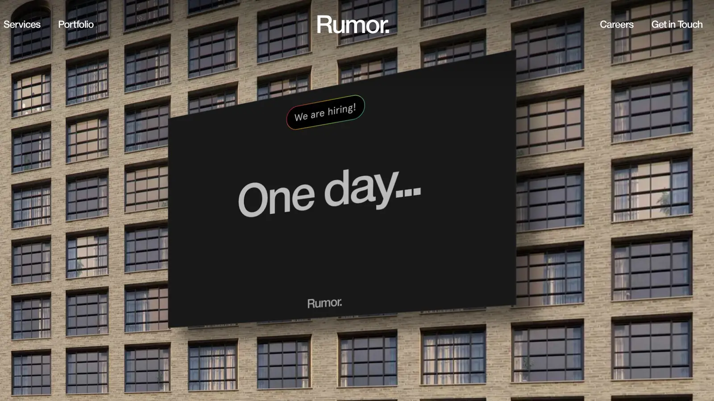
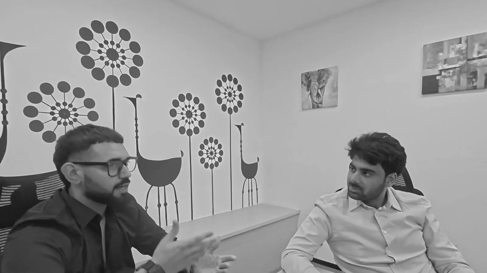

Medico Construction

- Built
- ads, AI calls on every enquiry
- Paid us
- ~$100k
- Made
- ~$6M
contracted in 2 years
For agency owners, high-ticket coaches and B2B founders
$220,000 in six months in India. You install the same system. First client in 90 days, or every rupee back.
Free 8-minute training.
This needs a business with paying clients. I'd rather say so than take your ₹999.
Free guides: @sandymarketinglab
For agency owners, high-ticket coaches and B2B founders
8 minutes on why it happens, and the system I run so it doesn't.
45 minutes with me on where your clients leak.
You'll leave knowing where it breaks and what I'd fix first.
₹999, credited if you join.


Who you'll be talking to
I'm Sandy. Since 2017 I've run a marketing agency, ZippyScale, out of Vancouver. Our clients were in Canada and the US. This year I moved our operations to India.
We built every result by hand for clients first. Today the repeatable steps are skill files Claude Code runs. I still take every call myself.
Claude Code drafts it. You approve it.
We built these by hand for clients first. Today the repeatable steps are skill files Claude Code runs.

contracted in 2 years
~$85k from $30k of ads. Before us, $20k of ads made ~$30k.

in ~3 months
Our own offer
300 leads
50 qualified
10+ closed at ₹1.5L
Also built for Agent Lions Den Jas Oberoi Riarh Group Celestial Luxury Resorts Walk Again Rehab Swathi Veldandi Studio
The 21 Day Sprint
15 live sessions, weekdays 7 to 8:30 pm IST. Mon 26 Oct to demo day, Fri 13 Nov.
offer, lead magnet and page built. Every enquiry gets caught.
your first 100 messages go out.
follow-up and sales call set. You show what you've booked.
The Accelerator
Clients paid us about $12k to $100k for these systems. I install them in yours.
Plus every skill file, all 15 Sprint sessions, a handover pack for every system
I'm on every one of those calls, and I can't do more than ten properly.
10 seats

Sprint or Accelerator
Sprint |
Accelerator |
|
|---|---|---|
| Who builds it | You build it, live, after I show each step | I build it with you, on every call |
| Format | Group, live | One to one with me |
| Length | 21 days, Mon 26 Oct to Fri 13 Nov | 8 weeks |
| Live sessions | 15, weekdays 7 to 8:30 pm IST | Booked on your calendar |
| 1:1 with me | None, it's a group | Every call, all 8 weeks |
| Skill files | 6 packs | All 13 packs |
| Recordings | Up the next morning | All 15 Sprint sessions |
| Seats | Open | 10 |
The same files we run on client work.
No closed client in 90 days? Full refund.
Both programs
Execute the progress sheet we share.
You need a business that already exists and an offer people already pay for.
This isn't for
This is for
You won't write code. The skill files are already written. I show the step, then you run it on yours.
That's why week two is all getting clients in. Your first 100 messages go out that Friday.
That's why every session is live, on your own business.
90 minutes, 15 evenings. Miss one and the recording's up next morning.
Less different than you think. A construction firm, a rehab clinic, a couture studio, coaches, realtors and design agencies all had to get clients in and look after them.
The right option depends on what you've already built. I'll tell you on the call.
I take every call myself. It's credited if you join, and refunded if you cancel before it.
Yes. Domains, inboxes and a sending tool. You pay them directly.